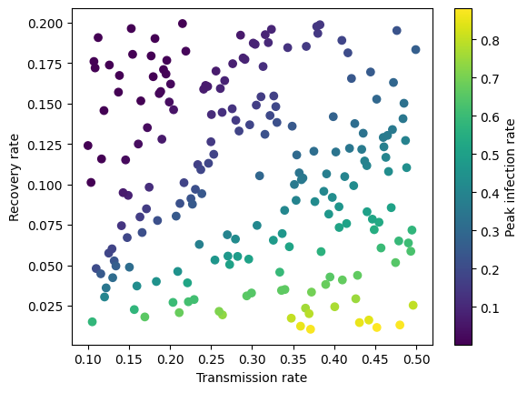
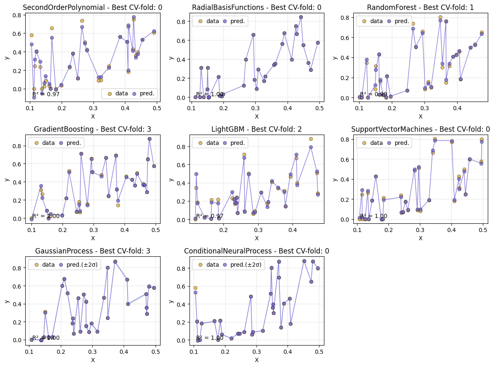
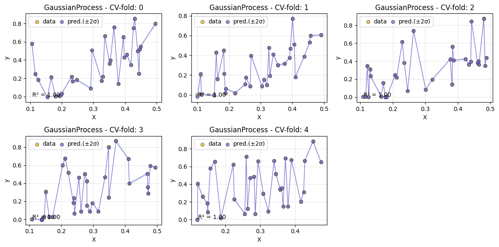
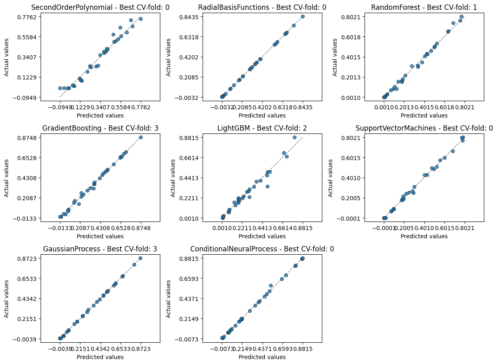
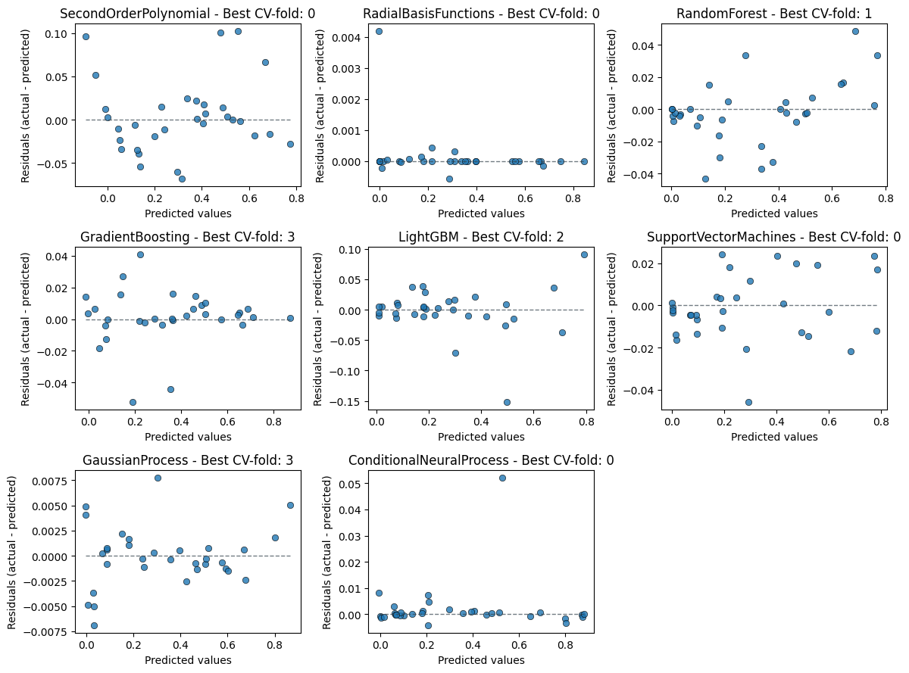
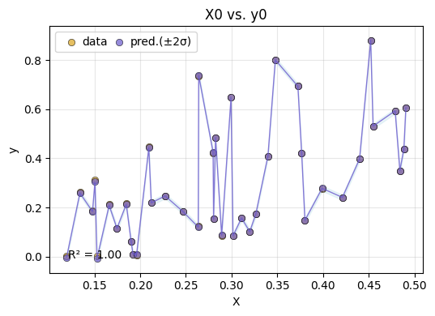
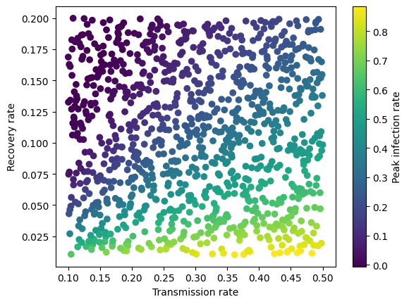

A deeper dive into AutoEmulate#
Why AutoEmulate#
Simulations of real-world physical, chemical or biological processes can be complex and computationally expensive, and will often need high-performance computing resources and a lot of time to run. This becomes a problem when simulations need to be run thousands or tens of thousands of times to do uncertainty quantification or sensitivity analysis. It’s also a problem when a simulation needs to run fast enough to be useful in real-world or real-time applications, such as digital twins.
Emulator models are drop-in replacements for complex simulations, and can be orders of magnitude faster. Any model could be an emulator in principle, from a simple linear regression to Gaussian Processes to Neural Networks. Evaluating all these models requires time and machine learning expertise. AutoEmulate is designed to automate the process of finding a good emulator model for a simulation.
In the background, AutoEmulate does input processing, cross-validation, hyperparameter optimization and model selection. It’s different from typical AutoML packages, as the choice of models and hyperparameter search spaces is optimised for typical emulation problems. Over time, we expect the package to further adapt to the emulation needs of the community.
Workflow#
A typical workflow will involve
generating data from a simulation
running
AutoEmulatesummarising cross-validation results
refitting the emulator model on the full data
saving and loading the emulator.
import numpy as np
import pandas as pd
import matplotlib.pyplot as plt
from autoemulate.experimental_design import LatinHypercube
from autoemulate.simulations.epidemic import simulate_epidemic
from autoemulate.compare import AutoEmulate
/opt/hostedtoolcache/Python/3.11.10/x64/lib/python3.11/site-packages/autoemulate/compare.py:8: TqdmExperimentalWarning: Using `tqdm.autonotebook.tqdm` in notebook mode. Use `tqdm.tqdm` instead to force console mode (e.g. in jupyter console)
from tqdm.autonotebook import tqdm
1) Experimental Design (Sampling)#
Let’s first generate a set of inputs/outputs. We’ll use a simple simulator for the spread of infectious diseases based on the SIR model (see here for details). For simplicity, we assume a population size of 1000 individuals and start with 1 infected person. The simulator takes two inputs, the transmission rate per day and the recovery rate per day and outputs the peak infection rate.
We sample 200 sets of inputs X using a Latin Hypercube and run the simulator for those inputs to get a vector of outputs y.
seed = 42
np.random.seed(seed)
beta = (0.1, 0.5) # lower and upper bounds for the transmission rate
gamma = (0.01, 0.2) # lower and upper bounds for the recovery rate
lhd = LatinHypercube([beta, gamma])
X = lhd.sample(200)
y = np.array([simulate_epidemic(x) for x in X])
print(f"shapes: input X: {X.shape}, output y: {y.shape}\n")
print(f"X: {np.round(X[:3], 2)}\n")
print(f"y: {np.round(y[:3], 2)}\n")
shapes: input X: (200, 2), output y: (200,)
X: [[0.29 0.18]
[0.13 0.04]
[0.16 0.12]]
y: [0.09 0.31 0.03]
The general shape of the input data is a matrix X and a matrix (or vector) y where each row represents one run of the simulation and each column is a different input parameter. So in the example above, 0.29 and 0.18 are the two input parameters beta and gamma for the first run of the simulation, and 0.09 (peak transmission rate) is the output.
Note: The package currently only works with scalar inputs.
Let’s now plot the simulated data to see how the pattern looks like. As we might guess intuitively, the peak infection rate is higher when the transmission rate increases and the recovery rate decreases.
transmission_rate = X[:, 0]
recovery_rate = X[:, 1]
plt.scatter(transmission_rate, recovery_rate, c=y, cmap='viridis')
plt.xlabel('Transmission rate')
plt.ylabel('Recovery rate')
plt.colorbar(label="Peak infection rate")
plt.show
<function matplotlib.pyplot.show(close=None, block=None)>

2) Emulation#
A real world epidemic simulation will be computationally expensive and will take a long time to run. To evaluate the peak infection rate for thousands of different combinations of input parameters, it would be practical to to create a fast emulator model, which can then be used to predict the peak infection rate for new input parameters.
The simplest way to test different emulators is to run AutoEmulate with default parameters, providing only inputs X and outputs y. What happens in the background is that the inputs will be standardised (scale=True), after which various models are fitted and evaluated using 5-fold cross-validation.
em = AutoEmulate()
em.setup(X, y)
best_model = em.compare()
AutoEmulate is set up with the following settings:
| Values | |
|---|---|
| Simulation input shape (X) | (200, 2) |
| Simulation output shape (y) | (200,) |
| Proportion of data for testing (test_set_size) | 0.2 |
| Scale input data (scale) | True |
| Scaler (scaler) | StandardScaler |
| Do hyperparameter search (param_search) | False |
| Reduce dimensionality (reduce_dim) | False |
| Cross validator (cross_validator) | KFold |
| Parallel jobs (n_jobs) | 1 |
3) Summarising cross-validation results#
We can summarise the cross-validation results to see that several models have a high \(R^2\) and root mean squared error, suggesting a good fit. These metrics are the average metric on the test data across cv-folds.
em.summarise_cv()
| model | short | rmse | r2 | |
|---|---|---|---|---|
| 0 | GaussianProcess | gp | 0.003531 | 0.999754 |
| 1 | RadialBasisFunctions | rbf | 0.003862 | 0.999433 |
| 2 | ConditionalNeuralProcess | cnp | 0.018311 | 0.990825 |
| 3 | SupportVectorMachines | svm | 0.023589 | 0.989631 |
| 4 | GradientBoosting | gb | 0.029979 | 0.983343 |
| 5 | RandomForest | rf | 0.033720 | 0.978359 |
| 6 | SecondOrderPolynomial | sop | 0.036846 | 0.972450 |
| 7 | LightGBM | lgbm | 0.040512 | 0.969204 |
We can also look at each of the cv-folds for a specific model, like Gaussian Processes.
em.summarise_cv(model="GaussianProcess")
| fold | rmse | r2 | |
|---|---|---|---|
| 0 | 0 | 0.003256 | 0.999835 |
| 1 | 1 | 0.005116 | 0.999530 |
| 2 | 2 | 0.003646 | 0.999678 |
| 3 | 3 | 0.002202 | 0.999922 |
| 4 | 4 | 0.003435 | 0.999804 |
Next, we can plot the cv results using different plot styles. If the simulation has multiple inputs and outputs, the default is to plot the first input (‘input_index=0’) and the first output (output_index=0), but this can be changed. The default style is Xy, which plots predictions and data points.
em.plot_cv()

To inspect specific models more closely, we can plot the predictions for each cv fold for a given model.
em.plot_cv(model='GaussianProcess')

An alternative plot is actual_vs_predicted, which plots the true values against the predicted values.
em.plot_cv(style="actual_vs_predicted")

Always good to inspect the residuals too to spot any patterns.
em.plot_cv(style="residual_vs_predicted")

5) Evaluate the emulator#
After looking at the cv results, we can chose an emulator model and see how it performs on the test-set, which AutoEmulate automatically sets aside.
gp = em.get_model("GaussianProcess")
em.evaluate(gp)
| model | short | rmse | r2 | |
|---|---|---|---|---|
| 0 | GaussianProcess | gp | 0.0027 | 0.9999 |
We can plot the test-set performance for chosen emulator.
em.plot_eval(gp)

4) Refitting the model on the full dataset#
AutoEmulate splits the dataset into a training and holdout set. All cross-validation, parameter optimisation and model selection is done on the training set. After we selected a best emulator model, we can refit it on the full dataset.
gp_final = em.refit(gp)
Let’s now try to predict the peak infection rate for a new set of transmission and recovery rates. Because our emulator is much faster then the original simulation, we can now evaluate the peak infection rate for a much larger set of input parameters.
seed = 42
np.random.seed(seed)
beta = (0.1, 0.5) # lower and upper bounds for the transmission rate
gamma = (0.01, 0.2) # lower and upper bounds for the recovery rate
lhd = LatinHypercube([beta, gamma])
X_new = lhd.sample(1000)
y_new = gp.predict(X_new)
And let’s do another plot:
transmission_rate = X_new[:, 0]
recovery_rate = X_new[:, 1]
plt.scatter(transmission_rate, recovery_rate, c=y_new, cmap='viridis')
plt.xlabel('Transmission rate')
plt.ylabel('Recovery rate')
plt.colorbar(label="Peak infection rate")
plt.show
<function matplotlib.pyplot.show(close=None, block=None)>

4) Saving / Loading#
We can save and load the model using em.save() and em.load(). The model is saved using joblib.dump. Next to the model, there is also a _meta.json file which specifies the required dependencies and should be present when loading the model to check that the correct package versions are installed.
# em.save(gp_final, "gp_final")
# gp_final_loaded = em.load("gp_final")
Hyperparameter search#
Although we tried to chose default model parameters that work well in a wide range of scenarios, hyperparameter search will often find an emulator model with a better fit. Internally, AutoEmulate compares the performance of different models and hyperparameters using cross-validation on the training data, which can be computationally expensive and time-consuming for larger datasets. To speed it up, we can parallelise the process with n_jobs.
For each model, we’ve pre-defined a search space for hyperparameters. When setting up AutoEmulate with param_search=True, we default to using random search with param_search_iters = 20 iterations. The alternative is param_search_method = "bayes" which uses a Bayesian optimisation method (see here for details).
Let’s do a hyperparameter search for the Gaussian Process and Random Forest models.
em = AutoEmulate()
em.setup(X, y, param_search=True, param_search_type="random", param_search_iters=20, models=["GaussianProcess", "RandomForest"], n_jobs=-2) # n_jobs=-2 uses all cores but one
em.compare()
AutoEmulate is set up with the following settings:
| Values | |
|---|---|
| Simulation input shape (X) | (200, 2) |
| Simulation output shape (y) | (200,) |
| Proportion of data for testing (test_set_size) | 0.2 |
| Scale input data (scale) | True |
| Scaler (scaler) | StandardScaler |
| Do hyperparameter search (param_search) | True |
| Type of hyperparameter search (search_type) | random |
| Number of sampled parameter settings (param_search_iters) | 20 |
| Reduce dimensionality (reduce_dim) | False |
| Cross validator (cross_validator) | KFold |
| Parallel jobs (n_jobs) | -2 |
---------------------------------------------------------------------------
KeyboardInterrupt Traceback (most recent call last)
Cell In[17], line 3
1 em = AutoEmulate()
2 em.setup(X, y, param_search=True, param_search_type="random", param_search_iters=20, models=["GaussianProcess", "RandomForest"], n_jobs=-2) # n_jobs=-2 uses all cores but one
----> 3 em.compare()
File /opt/hostedtoolcache/Python/3.11.10/x64/lib/python3.11/site-packages/autoemulate/compare.py:211, in AutoEmulate.compare(self)
208 try:
209 # hyperparameter search
210 if self.param_search:
--> 211 self.models[i] = _optimize_params(
212 X=self.X[self.train_idxs],
213 y=self.y[self.train_idxs],
214 cv=self.cross_validator,
215 model=model,
216 search_type=self.search_type,
217 niter=self.param_search_iters,
218 param_space=None,
219 n_jobs=self.n_jobs,
220 logger=self.logger,
221 )
222 # run cross validation
223 fitted_model, cv_results = _run_cv(
224 X=self.X[self.train_idxs],
225 y=self.y[self.train_idxs],
(...)
230 logger=self.logger,
231 )
File /opt/hostedtoolcache/Python/3.11.10/x64/lib/python3.11/site-packages/autoemulate/hyperparam_searching.py:100, in _optimize_params(X, y, cv, model, search_type, niter, param_space, n_jobs, logger, error_score, verbose)
98 # run hyperparameter search
99 try:
--> 100 searcher.fit(X, y)
101 except Exception:
102 logger.exception(
103 f"Failed to perform hyperparameter search on {get_model_name(model)}"
104 )
File /opt/hostedtoolcache/Python/3.11.10/x64/lib/python3.11/site-packages/sklearn/base.py:1473, in _fit_context.<locals>.decorator.<locals>.wrapper(estimator, *args, **kwargs)
1466 estimator._validate_params()
1468 with config_context(
1469 skip_parameter_validation=(
1470 prefer_skip_nested_validation or global_skip_validation
1471 )
1472 ):
-> 1473 return fit_method(estimator, *args, **kwargs)
File /opt/hostedtoolcache/Python/3.11.10/x64/lib/python3.11/site-packages/sklearn/model_selection/_search.py:1019, in BaseSearchCV.fit(self, X, y, **params)
1013 results = self._format_results(
1014 all_candidate_params, n_splits, all_out, all_more_results
1015 )
1017 return results
-> 1019 self._run_search(evaluate_candidates)
1021 # multimetric is determined here because in the case of a callable
1022 # self.scoring the return type is only known after calling
1023 first_test_score = all_out[0]["test_scores"]
File /opt/hostedtoolcache/Python/3.11.10/x64/lib/python3.11/site-packages/sklearn/model_selection/_search.py:1960, in RandomizedSearchCV._run_search(self, evaluate_candidates)
1958 def _run_search(self, evaluate_candidates):
1959 """Search n_iter candidates from param_distributions"""
-> 1960 evaluate_candidates(
1961 ParameterSampler(
1962 self.param_distributions, self.n_iter, random_state=self.random_state
1963 )
1964 )
File /opt/hostedtoolcache/Python/3.11.10/x64/lib/python3.11/site-packages/sklearn/model_selection/_search.py:965, in BaseSearchCV.fit.<locals>.evaluate_candidates(candidate_params, cv, more_results)
957 if self.verbose > 0:
958 print(
959 "Fitting {0} folds for each of {1} candidates,"
960 " totalling {2} fits".format(
961 n_splits, n_candidates, n_candidates * n_splits
962 )
963 )
--> 965 out = parallel(
966 delayed(_fit_and_score)(
967 clone(base_estimator),
968 X,
969 y,
970 train=train,
971 test=test,
972 parameters=parameters,
973 split_progress=(split_idx, n_splits),
974 candidate_progress=(cand_idx, n_candidates),
975 **fit_and_score_kwargs,
976 )
977 for (cand_idx, parameters), (split_idx, (train, test)) in product(
978 enumerate(candidate_params),
979 enumerate(cv.split(X, y, **routed_params.splitter.split)),
980 )
981 )
983 if len(out) < 1:
984 raise ValueError(
985 "No fits were performed. "
986 "Was the CV iterator empty? "
987 "Were there no candidates?"
988 )
File /opt/hostedtoolcache/Python/3.11.10/x64/lib/python3.11/site-packages/sklearn/utils/parallel.py:74, in Parallel.__call__(self, iterable)
69 config = get_config()
70 iterable_with_config = (
71 (_with_config(delayed_func, config), args, kwargs)
72 for delayed_func, args, kwargs in iterable
73 )
---> 74 return super().__call__(iterable_with_config)
File /opt/hostedtoolcache/Python/3.11.10/x64/lib/python3.11/site-packages/joblib/parallel.py:2007, in Parallel.__call__(self, iterable)
2001 # The first item from the output is blank, but it makes the interpreter
2002 # progress until it enters the Try/Except block of the generator and
2003 # reaches the first `yield` statement. This starts the asynchronous
2004 # dispatch of the tasks to the workers.
2005 next(output)
-> 2007 return output if self.return_generator else list(output)
File /opt/hostedtoolcache/Python/3.11.10/x64/lib/python3.11/site-packages/joblib/parallel.py:1650, in Parallel._get_outputs(self, iterator, pre_dispatch)
1647 yield
1649 with self._backend.retrieval_context():
-> 1650 yield from self._retrieve()
1652 except GeneratorExit:
1653 # The generator has been garbage collected before being fully
1654 # consumed. This aborts the remaining tasks if possible and warn
1655 # the user if necessary.
1656 self._exception = True
File /opt/hostedtoolcache/Python/3.11.10/x64/lib/python3.11/site-packages/joblib/parallel.py:1762, in Parallel._retrieve(self)
1757 # If the next job is not ready for retrieval yet, we just wait for
1758 # async callbacks to progress.
1759 if ((len(self._jobs) == 0) or
1760 (self._jobs[0].get_status(
1761 timeout=self.timeout) == TASK_PENDING)):
-> 1762 time.sleep(0.01)
1763 continue
1765 # We need to be careful: the job list can be filling up as
1766 # we empty it and Python list are not thread-safe by
1767 # default hence the use of the lock
KeyboardInterrupt:
em.summarise_cv()
| model | short | rmse | r2 | |
|---|---|---|---|---|
| 0 | GaussianProcess | gp | 0.002587 | 0.999806 |
| 1 | RandomForest | rf | 0.032767 | 0.979866 |
Notes:
Some models, such as
GaussianProcesscan be slow to run hyperparameter search on larger datasets (say n > 1500).Use the
modelsargument to only run hyperparameter search on a subset of models to speed up the process.When possible, use
n_jobsto parallelise the hyperparameter search. With larger datasets, we recommend settingparam_search_itersto a lower number, such as 5, to see how long it takes to run and then increase it if necessary.all models can be specified with short names too, such as
rfforRandomForest,gpforGaussianProcess,svmforSupportVectorMachines, etc
Multioutput simulations#
All models run with multi-output data as well. Some models naively support multiple outputs. For models that don’t, AutoEmulate fits the model to each output separately under the hood. To see which models run separately for each output, we can check a model and see whether the pipeline includes a MultiOutputRegressor step. Note: all following metrics are averaged across outputs.
from autoemulate.simulations.projectile import simulate_projectile_multioutput
lhd = LatinHypercube([(-5., 1.), (0., 1000.)]) # (upper, lower) bounds for each parameter
X = lhd.sample(100)
y = np.array([simulate_projectile_multioutput(x) for x in X])
X.shape, y.shape
((100, 2), (100, 2))
em = AutoEmulate()
em.setup(X, y)
AutoEmulate is set up with the following settings:
| Values | |
|---|---|
| Simulation input shape (X) | (100, 2) |
| Simulation output shape (y) | (100, 2) |
| Proportion of data for testing (test_set_size) | 0.2 |
| Scale input data (scale) | True |
| Scaler (scaler) | StandardScaler |
| Do hyperparameter search (param_search) | False |
| Reduce dimensionality (reduce_dim) | False |
| Cross validator (cross_validator) | KFold |
| Parallel jobs (n_jobs) | 1 |
If we print a model, say SVM, we can see that it’s wrapped in a MultiOutputRegressor, because it doesn’t natively support multioutput data.
print(em.models[5]) # print the 5th model
Pipeline(steps=[('scaler', StandardScaler()),
('model',
MultiOutputRegressor(estimator=SupportVectorMachines()))])
Custom standardisation, cross-validation and dimension reduction#
Standardisation#
AutoEmulate standardises inputs by default (scale=True) to have zero mean and unit variance. It uses scaler=StandardScaler() but other normalisers can be used, or the inputs can be left unscaled (scale=False). In addition, some models, like Gaussian Processes also standardise outputs, which makes them work better. Checking the parameters of a model with model.get_params() will show whether the model standardises outputs.
Dimension reduction#
When there are lots of input variables, it can be useful to reduce the dimensionality. To do this, we can add a dimension reduction step to each model using reduce_dim=True. Be default, this uses PCA from scikit-learn, but other dimension reduction methods can be used.
Cross-validation#
The default cross-validation method is 5-fold cross-validation using sklearn.model_selection.KFold. The parameters can be changed or other cross-validation methods can be used, see sklearn.model_selection splitter classes for details.
Example#
Let’s say we wanted to change to a MinMaxScaler, to do PCA but retain components explaining more than 99% of the variance and do KFold cross validation but with 3 splits and no shuffling. To do this, we can just import the respective classes from sklearn and pass them to setup().
### Example
from sklearn.preprocessing import MinMaxScaler
from sklearn.decomposition import PCA
from sklearn.model_selection import KFold
mmscaler = MinMaxScaler()
pca = PCA(0.99)
kfold = KFold(n_splits=3, shuffle=False)
em = AutoEmulate()
em.setup(X, y, scale=True, scaler=mmscaler, cross_validator=kfold)
best_model = em.compare()
AutoEmulate is set up with the following settings:
| Values | |
|---|---|
| Simulation input shape (X) | (100, 2) |
| Simulation output shape (y) | (100, 2) |
| Proportion of data for testing (test_set_size) | 0.2 |
| Scale input data (scale) | True |
| Scaler (scaler) | MinMaxScaler |
| Do hyperparameter search (param_search) | False |
| Reduce dimensionality (reduce_dim) | False |
| Cross validator (cross_validator) | KFold |
| Parallel jobs (n_jobs) | 1 |
Note: Not all possible cross validators, scalers and decomposers have been tested and only a few make sense in the current version of AutoEmulate. If you encounter any issues, please open an issue on GitHub.